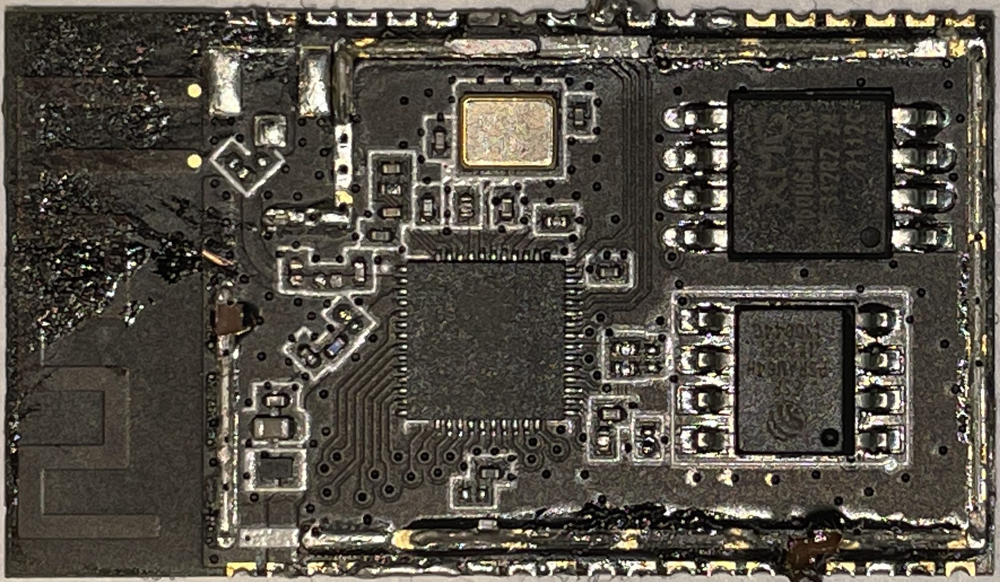

Somfy - Connectivity Kit¶
Analysis and Information about the Board Layout, PIN Definitions and ongoing efforts to understand the platform.
---
title: Somfy - Connectivity Kit Schema
---
%%{init:{
"theme": "neutral",
"fontFamily": "monospace",
"flowchart": {"curve": "linear"}}
}%%
flowchart LR
subgraph minikiz["Somfy Connectivity Kit"]
direction LR
subgraph iohc["io-homecontrol"]
direction TB
stm32{"STM32<br>F101RC"}<--"UART"-->si4461{{"Si 4461"}}
click si4461 "../../datasheets/silabs-si4461.pdf" "Si 4461 Datasheet"
click stm32 "../../datasheets/stm32-f101rc.pdf" "STM32 F101xC Datasheet"
end
subgraph wrover["ESP32 WROVER-E N8R8 - 2.1"]
direction TB
esp32{"ESP32<br/>D0WD-V3"}
ram[["8 MB<br/>RAM<br/>(PSRAM64H)"]]
rom[["8 MB<br/>ROM<br/>(XM25QH64C)"]]
esp32<--"SPI"-->ram
esp32<--"SPI"-->rom
click esp32 "../../datasheets/ESP32/esp32-wrover-e-datasheet.pdf"
click ram "../../datasheets/ESP32/PSRAM64H.pdf"
click rom "../../datasheets/ESP32/XM25QH64C.pdf"
end
subgraph rts["RTS"]
direction TB
sx1243{{"SX 1243"}}
click sx1243 "../../datasheets/semtech/sx1243.pdf"
end
iohc<--"SPI"-->wrover--"TWI<br/>(I2C)"-->rts
endNOTE: When referencing PCB directions it is always assumed that we are looking at the top of the PCB with the buttons facing towards you like in the pictures.
Pin Layout¶
NOTE: When refering to Pins their Naming Scheme is used and not their actual number on the board itself since this makes mapping to source code and documentation easier ;)
ESP32 Wrover-E Module¶
Note: ESP32 GPIO Summary
| ESP32 GPIO |
STM32 PIN |
DBG PIN |
FUNCTION |
|---|---|---|---|
| LEFT | ESP32 LEFT ROW: 1 - 19 (Top>Bottom) | ||
| GND | 0 | ||
| 3V3 | 1 | ||
| EN | ChipEnable / Reset | ||
| VP | Button:Prog |
Button: Right Side | |
| VN | DBG:1 | Bridge Point 1 | |
| 34 | DBG:2 | Bridge Point 2 | |
| 35 | DBG:3 | Bridge Point 3 | |
| 32 | LED | LED:Green | |
| 33 | LED | nc? | |
| 25 | LED | LED:White | |
| 26 | :grey_question: | Debug Port with missing Chip (UART?) | |
| 27 | :grey_question: | Debug Port with missing Chip (UART?) | |
| 14 | 42TX |
DBG:Rx | HSPI_CK/ JTAG TDMS - TestArea3-Bottom |
| 12 | LED | HSPI_Q / JTAG TDDI - LED-BlueWiFiStrap: LOW for Boot Mode: "should be kept low when module is on." |
|
| GND | 0 | ||
| 13 | RTS | HSPI_DATA / JTAG CK - RTS:6CTRL |
|
| RIGHT | STM32 | ESP32 RIGHT ROW: 20 - 38 (Top>Bottom) | |
| GND | 0 | ||
| 23 | Button/LED | VSPI DATA - Button and LED |
|
| 22 | RTS | UART RTS / VSPI WP - UpRight-LeftRTS:2DATA |
|
| TXD | UART:Tx | UART TX - UpRight-RightStrap: Debug Output |
|
| RXD | UART:Rx | UART RX - UpRight-MiddleStrap: HIGH at Boot Mode |
|
| 21 | DBG:Unknown | VSPI HD - Debug RightSide of ESP with 3 Contacts (Top)Function Unknown. Could be used in conjunction with IO2 to select Boot Mode |
|
| nc | nc | ||
| 19 | RTS | VSPI Q / UART CTS - RTS:5RST |
|
| 18 | BOOT0 |
STM32:BootMode | VSPI CLK |
| 5 | UNCORRECT:Reset |
VSPI CS - Strap: 0 = BootMode |
|
| nc | nc | ||
| nc | nc | ||
| 4 | RESET |
Button:???/SWD | HSPI HD=HOLD Button: Left Side / SWD:1RST |
| 0 | Strap | CLK OUT - Test2-MiddleStrap: 0 = BootMode |
|
| 2 | Strap | HSPI WP=WriteProtect - Test1-MiddleStrap: 0 = BootMode |
|
| 15 | 43RX |
DBG:Tx | HSPI CS / JTAG DO - Test3-TopStrap: 1 = Debug Log @ UART TX |
Note: ESP32 has two I2C channels. Any pin can be set as SDA or SC. Good SPI Explanation ESP32: Boot Mode Selection
Note: LED Info could also be found here: https://github.com/Overkiz/esp-idf/commit/b553be8a5d074ec39fa5e2beac14c99eb4932388 Note: It seems Overkiz is using the official ESP bootloader and WebIOPi (Python) to test this (or the STM32) via Serial
ESP32 WROVER-E (ESP32-D0WD-V3) GPIO Summary
| GPIO | STRAP | Comments | | ------: | :---: | :----------------- | | 00 | 1 | CLK_OUT1 | | `VSPI` | | `VSPI` | | 05 | 1 | VSPICS | | 18 | | VSPICLK | | 21 | | VSPIHDA | | 23 | | VSPIDAT | | 19 | | VSPIQPI; U0CTS | | 22 | | VSPIWPT; U0RTS | | `HSPI` | | `HSPI` | | 02 | 0 | HSPIWP | | 04 | | HSPIHDA | | 12 | 0 | JTAG:MTDI; HSPIQPI | | 15 | 1 | JTAG:MTDO; HSPICS | | 13 | | JTAG:MTCK; HSPIDAT | | 14 | | JTAG:MTMS; HSPICLK | | 01 | | U0TXD; CLK_OUT3 | | 03 | | U0RXD; CLK_OUT2 | | `NoDef` | | `NO DEFINITION` | | 25-27 | | | | 32-33 | | | | `GPI` | | `INPUT ONLY` | | 34-35 | | GPI | | 36 | | GPI; SENSOR_VP | | 37-38 | | GPI | | 39 | | GPI; SENSOR_VN | | `N/A` | | `NOT USABLE` | | 06-11 | | SPI0/1; ROM | | 16-17 | | SPI0/1; RAM | - **Note**: GPIO34-39 are input only and have no software-enabled pull-up/down!SX1243 Pin Out (RTS)¶
- SX1243 Interface: TWI = I2C
| SX1243 | ESP32 | DBG PIN |
FUNCTION |
|---|---|---|---|
6: CTRL |
IO13:HSPI D |
I2C | Data |
2: DATA |
IO22:VSPI WP |
I2C | Chip Select |
5: nRESET |
IO19:VSPI Q |
RESET | Reset |
Note: On bigger boards the
selPin is used to set the freq as shown in this example
sel = pioB 14 0 = frequency = 433920000 # Not Always connected
sel = pioB 14 1 = frequency = 433420000 # Not Always connected
STM32 Pin Out¶
| STM32 | Si4462 | ESP32 | DBG | FUNCTION |
|---|---|---|---|---|
| RIGHT | ||||
| 5 | TST | Can be shorted with 6 | ||
| 6 | TST | Can be shorted with 5 | ||
7:RST |
IO4:io_reset |
SWD1: | Reset | |
| TOP | ||||
12:? |
TBD | Boot Mode Selection | ||
13:? |
TBD | Boot Mode Selection | ||
17:? |
TBD | Boot Mode Selection | ||
19:? |
TBD | Boot Mode Selection | ||
20:NSS1 |
15: SEL |
SPI | SPI1 NSS <> Si4461: SEL |
|
21:CKL1 |
12: CLK |
SPI | SPI1 CLK <> Si4461: CLK |
|
22:MISO1 |
13: SDO |
SPI | SPI1 MISO <> Si4461: SDO |
|
23:MOSI1 |
14: SDI |
SPI | SPI1 MOSI <> Si4461: SDI |
|
28:BOOT1 |
io_boot_1 |
Boot Mode Selection NOTE: 10k Pull Down Resistor |
||
29:SCL |
20: GPIO3 |
GPIO3 <> USART3_TX / SCL |
||
30:SDA |
19: GPIO2 |
GPIO2 <> USART3_RX / SDA |
||
31:? |
TBD | |||
32:? |
TBD | |||
| LEFT | ||||
| 33 | MODE_SEL | SPI2_NSS / USART3_CK / SMBA | ||
| 34 | MODE_SEL | SPI2_SCK / USART3_CTS | ||
| 35 | MODE_SEL | SPI2_MISO / USART3_RTS | ||
| 38 | MODE_SEL | |||
41:? |
TBD | |||
42:TXD1 |
IO14:io_usart_tx |
USART | USART1_TX | |
43:RXD1 |
IO15:io_usart_rx |
USART | USART1_RX | |
| 46 | SWD5: | JTMS-SWDIO (PA13) | ||
48:? |
TBD | |||
| BOTTOM | ||||
| 49 | SWD4:CLK | JTCK-SWCLK (PA14) | ||
| 50 | SWD2:DI | JTDI / SPI3_NSS (PA15) | ||
| 55 | SWD3:DO | JTDO (PB3) | ||
| 56 | SWD6:RST | NJTRST (PB4) | ||
60:BOOT0 |
IO18:io_boot_0 |
BOOT_SEL | Boot Mode Selection | |
| 62 | MODE_SEL | Switch: Left |
Known PIN Names extracted from DTBs (AT91) for the STM32 with iohc firmware: - PB30 io_reset pioA = Standard PIN - PC09 io_test_radio pioA HIGH - PC11 io_boot_0 pioA HIGH = Standard PIN - PC17 io_boot_1 pioA HIGH = Standard PIN
The STM32 firmware knows different "modes" which it can recognize. This information was gathered from the KizOs images. Since there are at least four unknown Pins that could be bridged i would assume that
serial rf at91-gpio PA2 = 0 at91-gpio PA3 = TEST_RADIO: 1 at91-gpio PA5 = BOOT0: 0 at91-gpio PA6 = BOOT1: 0
---
title: Somfy Connectivity Kit - Serial Wire JTAG Debug Port (SWJ-DP)
---
%%{init:{"theme": "neutral","fontFamily":"monospace","flowchart":{"curve":"linear"}}}%%
stateDiagram
direction LR
classDef stm32Pin fill:white
classDef headerPin fill:grey
class PIN07_RST,PIN50_PA15,PIN55_PB3,PIN49_PA14,PIN46_PA13,PIN56_PB4,NC,GROUND,PIN64 headerPin
class RESET,JTDI,JTDO_TRACESWO,JTCK_SWCLK,JTMS_SWDIO,JTRST,VDD_3 stm32Pin
state "Somfy Connectivity Kit: Serial Wire JTAG Debug Port (SWJ-DP)" as Debug_Header
state Debug_Header {
state Left_Row {
direction LR
PIN07_RST --> RESET
PIN50_PA15 --> JTDI
PIN55_PB3 --> JTDO_TRACESWO
PIN49_PA14 --> JTCK_SWCLK
PIN46_PA13 --> JTMS_SWDIO
}
state Right_Row {
direction LR
PIN56_PB4 --> JTRST
NC --> 07_NC
GROUND --> 08_GND
GROUND --> 09_GND
PIN64 --> VDD_3
}
}Si446x Pin Out¶
Interface: SPI
| Si4462 | STM32 | DBG | FUNCTION |
|---|---|---|---|
9:IO0 |
TODO | TBD | See GPIO_PIN_CFGNOTE: Could be shorted with 11: nIRQ |
11:nIRQ |
See 9:IO0 | TBD | See GPIO_PIN_CFGNOTE: Could be shorted with 9: IO0 |
12:SCL |
21 | SPI | CLK <> Si4461_CLK |
13:SDO |
22 | SPI | MISO <> Si4461_SDO |
14:SDI |
23 | SPI | MOSI <> Si4461_SDI |
15: SEL |
20 | SPI | NSS <> Si4461_nSEL |
16: XOUT |
XTAL | 26 MHz | |
17: XIN |
XTAL | 26 MHz | |
19: IO2 |
30 | See GPIO_PIN_CFG |
|
20: IO3 |
29 | See GPIO_PIN_CFG |
|
1: SDN |
17 | PWR | Shutdown |
GPIO are configured by the GPIO_PIN_CFG command in address 13h Complete list of the GPIO options in the API guide GPIO pins 0 and 1 should be used for active signals such as data or clock GPIO pins 2 and 3 have more susceptibility to generating spurious in the synthesizer than pins 0 and 1
| SERIAL | I2C | SPI | DESC | |
|---|---|---|---|---|
| Clock | SCL | SCK/SCLK | ||
| Data | TX | SDA | SDI/MOSI | MasterOutSlaveIn |
| Data | RX | SDO/MISO | MasterInSlaveOut | |
| CE/nSS/nCS | ChipEnable/SlaveSelect/ChipSelect | |||
| WP | WriteProtect |
Bootloader¶
Bootloader messages from my somewhat broken board...
13:38:49:290 -> ets Jul 29 2019 12:21:46
13:38:49:290 ->
13:38:49:290 -> rst:0x0 (NO_MEAN),boot:0x0 (DOWNLOAD_BOOT(UART0/UART1/SDIO_FEI_FEO_V2))
13:38:49:306 -> ets_main.c 404
14:00:50:557 -> ets Jul 29 2019 12:21:46
14:00:50:557 ->
14:00:50:557 -> rst:0x1 (POWERON_RESET),boot:0x13 (SPI_FAST_FLASH_BOOT)
14:00:50:563 -> configsip: 0, SPIWP:0xee
14:00:50:565 -> clk_drv:0x00,q_drv:0x00,d_drv:0x00,cs0_drv:0x00,hd_drv:0x00,wp_drv:0x00
14:00:50:570 -> mode:DIO, clock div:2
14:00:50:573 -> load:0x3fff0018,len:4
14:00:50:576 -> load:0x3fff001c,len:7960
14:00:50:579 -> load:0x3d234c30,len:-1713843249
14:00:50:604 -> 1150 mmu set 00010000, pos 00010000
...
14:01:01:569 -> ets Jul 29 2019 12:21:46
14:01:01:569 ->
14:01:01:569 -> rst:0x10 (RTCWDT_RTC_RESET),boot:0x13 (SPI_FAST_FLASH_BOOT)
14:01:01:575 -> flash read err, 988
14:01:01:579 -> ets_main.c 384
14:01:04:325 -> ets Jul 29 2019 12:21:46
14:01:04:325 ->
14:01:04:325 -> rst:0x10 (RTCWDT_RTC_RESET),boot:0x13 (SPI_FAST_FLASH_BOOT)
14:01:04:330 -> configsip: 0, SPIWP:0xee
14:01:04:333 -> clk_drv:0x00,q_drv:0x00,d_drv:0x00,cs0_drv:0x00,hd_drv:0x00,wp_drv:0x00
14:01:04:338 -> mode:DIO, clock div:2
14:01:04:341 -> load:0x3fff0018,len:4
14:01:04:344 -> load:0x3fff001c,len:7960
14:01:04:347 -> load:0x3d234c30,len:-1713843249
14:01:04:374 -> 1150 mmu set 00010000, pos 00010000
...
There two main points of which their function is unknown: - IO26, IO27: The connect to an unpopulated area which holds a chip during testing (could be seen from the marker on bottom of the right side). - Since - IO21, IO2: Could be used for selection the Boot Mode or load/start a special app since IO2 is a Strap Pin and IO21 could serve as a Boot from Test Firmware pin
| SPI JTAG |
MISO MTDI |
MOSI MTCK |
CLK MTMS |
CS MTDO |
|---|---|---|---|---|
| V-SPI | 19 | 23 | 18 | 05 |
| H-SPI | 12 | 13 | 14 | 15 |
| JTAG | 12 | 13 | 14 | 15 |
| Debug Log |
15 = High |
ESP32 Boot Mode Selection and Jumper PINs¶
-
Boot Mode Selection | PIN | STD | BOOT | NORMAL | JUMPER | | ---: | :---: | :---: | :----: | ------ | | IO0 | 1 | 0 | 18 | YES | | IO2 | 0 | 0 | 14 | | | IO21 | ? | 13 | 14 | |
-
Jumper PINs | PIN | FUNCTION | | ---: | :--------------- | | IO5 | Button 1 RST | | VP | Button 2 PROG | | → | → | | VN | Jumper 1 Left | | IO34 | Jumper 2 Left | | IO35 | Jumper 3 Left | | IO23 | Jumper 4 Bottom | | IO0 | Jumper 5 Right | | → | → | | TXD0 | Tx | | RXD0 | Rx | | IO26 | Debug 1 | | IO27 | Debug 1 | | IO21 | Debug 2 | | IO2 | Debug 2 | | IO14 | STM32 + JTAG TMS | | IO15 | STM32 + JTAG | | IO18 | STM32 BOOT0 | | IO4 | STM32 RESET |
NOTE: Mainly used for testing. Use with caution as their meaning is unknown.
| IODebug
Log | | | | 15 = High |
LED Colors¶
Kizbox II¶
The lights display the product's operating mode:
- During Boot Phase
- Orange: Kizbox® is booting.
- Red (Blinking): Updating software.
- Orange (Blinking): Initialization before entering standard operating mode. During Standard Operating Mode
- Green: Kizbox® is connected to the cloud.
- Red: Kizbox® not connected to the cloud.
- Blue (Blinking): Kizbox® is pairing (local mode).
- Pressing the CFG button for 2 seconds initiates pairing to local mode. If no pairing is completed within 60 seconds, the product returns to standard operating mode.
- Blue: product is paired in local mode.
- CFG Button: Short press cancels local mode pairing.
- If Kizbox® connected to the cloud: light turns green.
- If Kizbox® not connected to the cloud: light turns red.
Buttons allow the following interactions:
- During boot phase
- RST : button forces the box update when pressed during the power on phase. Use a tool to operate it.
- During standard operating mode
- CFG, RST : actions dependent on software.
TaHoma V1¶
- @-GRÜN = Internet vorhanden
- @-ROT = Internet nicht vorhanden
- @-ORANGE/SCHWANKEND = ein Update wird heruntergeladen oder Verbindung wird hergestellt.
- GRÜN = Automatiken an
- GELB = Automatiken aus
TaHoma V2¶
- WEISS (im Betrieb) = online
- GRÜN = Alarmfunktionen aktiv
- ROT = Alarm ausgelöst oder TaHoma-Box offline
- ROT blinkend = Verbindungsaufbau
TaHoma Switch¶
- Top LEDs:
- WEISS blinkend = Wi-Fi Neuverbindung
- BLAU blinkend = Wi-Fi Einstellvorgang
- ROT blinkend = Wi-Fi Verbindungsabbruch
- ORANGE = Neustart-Anzeige
- GRÜN = Anzeige für die Aktivierung des Pro-Modus (nur Pro App)
- WEISS langsam blinkend = Szenario gestartet
- ROT = Szenario über Stopp-Button gestoppt
- Bottom LED:
- ROT = keine Serververbindung
- WEISS = online
STM32 Tools minibox/usr/share/actions/fw/bootmode minibox/usr/share/ftdi-tools/tty-bootmode minibox/usr/share/image-update-functions.sh minibox/usr/share/stm32-utils/setmode minibox/usr/sbin/stm32-upgrader minibox/usr/bin/stm32flash minibox/usr/bin/stm32-helper-generic minibox/usr/bin/stm32-helper minibox/usr/bin/ncp-updater minibox/etc/init.d/kizbox-reset-factory minibox/apps/overkiz/share/rtx/scripts/fwupdate.sh minibox/apps/overkiz/share/io-homecontrol/scripts/fwupdate.sh minibox/apps/overkiz/share/idealrf/scripts/idealupdater.sh minibox/apps/overkiz/internal/bin/internald minibox/apps/overkiz/idealrf/lib/Overkiz/HomeAutomation/Protocol/IdealRF/Updater/StmUpdater.lua minibox/apps/overkiz/idealrf/lib/Overkiz/HomeAutomation/Protocol/IdealRF/Command/CommandManager.lua mainctrl/usr/lib/libanimeoHW.so.1.0.246: kizbox2/usr/share/stm32-utils/setmode kizbox2/usr/share/image-update-functions.sh kizbox2/usr/share/ftdi-tools/tty-bootmode kizbox2/usr/share/actions/fw/bootmode kizbox2/usr/sbin/stm32-upgrader kizbox2/usr/bin/stm32flash kizbox2/usr/bin/stm32-helper-generic kizbox2/usr/bin/stm32-helper kizbox2/usr/bin/ncp-updater kizbox2/apps/overkiz/share/rtx/scripts/fwupdate.sh kizbox2/apps/overkiz/share/io-homecontrol/scripts/fwupdate.sh kizbox2/apps/overkiz/lib/lua/Overkiz/knowledge/io-utils.module kizbox2/apps/overkiz/internal/bin/internald ipsensorgw/usr/lib/libanimeoHW.so.1.0.245 ipsensorgw/usr/bin/stm32flash ipsensorgw/usr/bin/sensorGateway ipsensorgw/firmwares/sdnp/stm32-update.sh ipiogw/usr/lib/libanimeoHW.so.1.0.236 ipiogw/usr/bin/stm32flash ipiogw/usr/bin/gateway_io
Hardware¶
- Espressif ESP32-WROVER-E v2.1 Module
- Espressif ESP32-D0WD v3: CPU
- XMC XM25QH64CHIQ: ROM (8MB)
- Espressif ESP-PSRAM64H: RAM (8MB)
- Semtech SX1243 - Radio: 433 MHz (Somfy RTS, etc.)
- STM32F101RCT6 with 256kB ROM and 32kB RAM
- Silicon Labs Si4461 v2A1 - Radio: io-homecontrol
The LED of your Connectivity kit can give you information about its status:
- Solid orange: booting phase
- « Breathing » blue: during WiFi change credential
- Flashing white: during WiFi and server connection
- Flashing red: Connectivity kit is either not connected to Wifi or not connected to server, you might need to check your Internet connection.
- Solid white: Connectivity kit is powered and connected to server, you can use it normally.
NOTE: The LED can be turned off from the «.. » menu
ESP32-WROVER-E Board (ESP32-D0WD V3)¶
| ESP32-WROVER-E board without shield |
|---|
 |
| src: Dings Da Blog |
NOR Flash: XM25QH64CHIQ¶
- XM25 = Company Prefix + SPI Flash Family
- QH = Series: 2.3~3.6V, 4KB uniform-sector, Quad Mode
- 64 = Density: 64 MBit
- CHI = Version: SOP 208mil 8L Package + Temp. Range: Industrial (-40 - +85°C)
- Q = QE Code
NOTE:
QPI needs QE bit in Status Register-2 set. When QE=1, /WP => IO2 and /HOLD => IO3.


Software¶
TBD